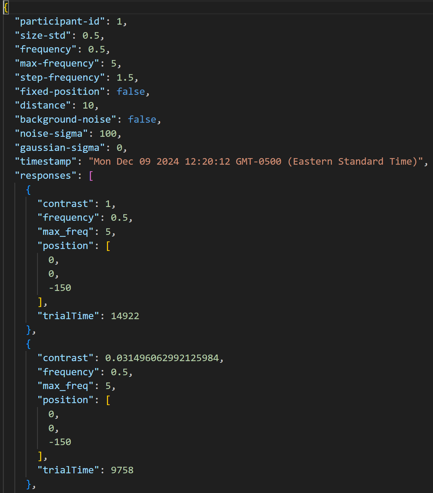

- Arrow up (keyboard)/thumbstick up (HMD controller): Increase contrast of current target by one gray
- Arrow down (keyboard)/thumbstick down (HMD controller): Decrease contrast of current target by one gray
- a (keyboard and HMD controller): Confirm threshold contrast that completes the current trial and move to the next one
- b (keyboard and HMD controller: To maximize the current contrast to 1 for further adjustment (only to speed up contrast adjustment for poor visibility trials)
- esc: Exit immersive mode
MXR Contrast Perception Tool Documentation
Introduction
The MXR contrast perception tool measures the contrast sensitivity of human participants on a virtual or augmented reality (VR or AR) head-mounted display (HMD).
Contrast sensitivity response (CSR), as the reciprocal of the threshold (minimum detectable) contrast of the human participant, is measured at various spatial frequencies.
This is achieved using a 2D sinusoidal pattern with predefined contrast and spatial frequency, known as a Gabor target.
The Gabor target can be rendered at a single or multiple locations across the display field of view (FOV).
The tool ensures that the sinusoidal contrast pattern remains circular (or perpendicular to the radial direction) relative to the target location.
Experiment
In the experiment, the location, size, spatial frequency range, and background noise of the Gabor target should be determined in the setup stage with detailed instructions below. During the perceptual experiments, the setup parameters cannot be changed. Each experiment contains multiple trails to determine the threshold contrast of the Gabor target at various spatial frequencies. In each trial, the target's contrast (starting as gray difference of 10, corresponding to a contrast of about 0.04) can be incremented or decremented by adjusting the display gray level using a headset controller (thumbstick up or down) or paired Bluetooth keyboard (arrow up or down) until reaching the threshold contrast of each trial. Once the threshold contrast is obtained, press button "A" on the controller or Bluetooth keyboard to complete the current trial. For very poor image quality conditions, e.g., threshold contrast close to 1, the button "B" can be used to maximize the contrast to 1 for further adjustment. At the end of the experiment, all trial data is saved as a JSON file. Statistical analysis of the results measured on multiple human participants is applied to obtain the CSR of a group of participants.
Setup
Prior to the experiment, the testing conditions should be setup in the menu on the left hand side of the user interface using a compatible HMD controller or Bluetooth keyboard. The experiment will run from the minimum to maximum frequency over a fixed position at the center of FOV or 9 different positions across FOV. The first trial (trial 0) is for illustration and practice, which will be excluded from data processing. The "min frequency", "max frequency" and "step frequency" are measured in cycles per degree. "Size" is the standard deviation of the gaussian bracket of the Gabor target measured in degrees that determines the target angular dimension. Note that the depth of the target is fixed at a long distance of 150 m. "Angular separation" is the shortest angular distance in degrees between neighboring targets over 9 positions. The background noise checkbox (optional) opens the noise menu which allows the user to adjust the noise amplitude in gray levels and standard deviation of the noise kernel. Below is detailed information on the units associated with each value in the menu.
Tool Menu
- Participant ID: A unique identifier of the participants and/or experimental configuration.
- Size: Angular dimension (std of the Gaussian bracket) of the Gabor target in degrees. Recommended to be less than 1 degree.
- Min Frequency: Spatial frequency of the patch when the experiment begins. Min value is 0.5 cycles per degree.
- Max Frequency: Spatial frequency of the patch when the experiment ends. Max value is 6 cycles per degree to avoid results affected by HMD anti-aliasing settings.
- Step Frequency: Incremental spatial frequency in cycles per degree. Value must be between min and max frequency.
- 9 positions: Checking this box allows the experiment to loop the frequency over 9 positions across the FOV determined by the shift.
- Angular Separation: The shortest angular distance in degree between various positions of the target.
- Background Noise: Checking this box opens the noise menu options.
- Noise Sigma: Standard deviation of the noise amplitude in gray levels (0-255)
- Gaussian Sigma: Standard deviation of the Gaussian kernel that adds noise correlation. Ranges from 0 to 9 only.
HMD Controller and Keyboard Control
Downloaded Results File

The json file compiles the results of the experiment. The json file has the following format where the participant id and experimental configurations such as spatial frequencies, angular separation, and noise settings are listed in the header. For each trial, the user-determined threshold contrast, target spatial frequency, and position are recorded. All the date in each trial is stored in the responses array of the file.
Data Processing
Python code for data processing
This code is designed to analyze and visualize contrast sensitivity data from multiple experiments. Its main functions are:
- Data Processing: It processes multiple JSON files containing experimental results on contrast sensitivity.
- Data Aggregation: The code combines data from all input files and calculates average contrast sensitivity for each spatial frequency and position combination.
- Visualization: It generates a set of plots per target position showing the Contrast Sensitivity Response (CSR) for different positions in the visual field.
To use this code effectively:
- Prepare Your Data: Ensure your JSON files follow the structure shown above. Multiple JSON files from multiple subjects can be grouped for statistical analysis. Data from the same experimental group should be placed in the same Input Directory.
- Run the Script: Execute the python script. Specify Input Directory for the data and Output Directory for the plots in pop-up windows.
- Interpret the Results: The script will generate a figure (CSR with the mean and standard deviation of the grouped experiments) per measured target position in the visual field. These plots show how contrast sensitivity changes with spatial frequency for each position.
What the Plots Show
- X-axis: Spatial Frequency (cycles/degree)
- Y-axis: Contrast Sensitivity Response (CSR) on a logarithmic scale
- Each plot represents a different position in the visual field, based on the "position" array in each response
- The line in each plot shows the average contrast sensitivity across all processed files for that position
- Error bars (if included) represent standard error or standard deviation across multiple trials or participants
Compatible HMDs
This tool has been validated for compatibility with the following HMDs: Meta Quest 2, Quest 3, Quest Pro, and Magic Leap 2. Compatibility of other HMDs should be checked prior to use of this tool.